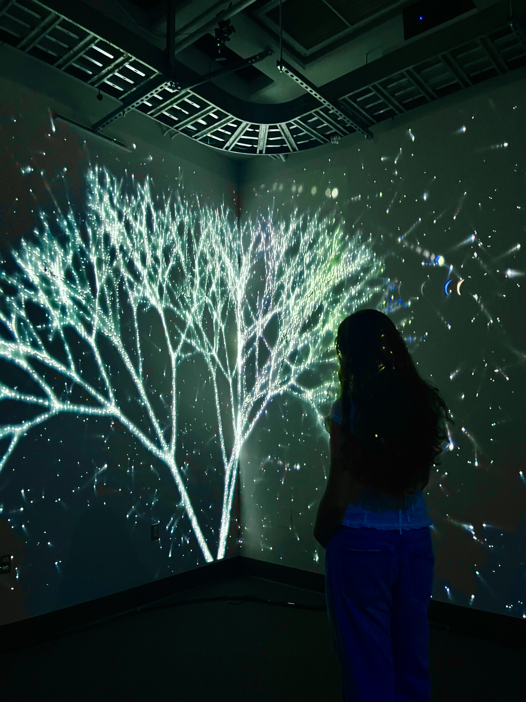

01
SELECTED WORK
Projects
Starchaser
An interactive browser game exploring authority, persistence, and choice. Players are repeatedly encouraged to complete an impossible task, but the experience can only end when they decide to stop trying.
I designed and developed the experience using p5.js, JavaScript, HTML, and CSS, combining interactive storytelling, original graphics, and game mechanics into a nonlinear digital narrative.
Visit live project ↗
Tree of Light
A collaborative interactive installation created in TouchDesigner. A projected tree grows and branches as viewers approach, while sound generates expanding bursts of light and color.
The piece visualizes how individual movement and collective presence create new possibilities and transform the environment around us.
Shaina's Tribute
A personal short film created from years of family archives for my cousin's 17th birthday. I curated more than 150 photographs and video clips into a cohesive visual narrative.
Edited in InShot, with an emphasis on pacing, emotional storytelling, archival selection, and synchronization between music and imagery.
02
ABOUT ME
Beyond the projects.
I like working where people, technology, and ideas come together.
WHO I AM
I'm a Psychological & Brain Sciences and Economics & Accounting student at UC Santa Barbara, with a minor in Media Arts and Design. My interests don't fit neatly into one field — and that's exactly what I like about them.
I'm drawn to understanding how people think and behave while also exploring how design, technology, and media can shape the way we experience the world.
WHAT I DO
As a neuroscience research assistant, I work with VR, EEG, behavioral data, and Unity to study attention and interaction with immersive technology.
Outside the lab, I create interactive websites, digital experiences, videos, and other media. I enjoy taking an idea from concept to execution and figuring out the technology needed to make it real.